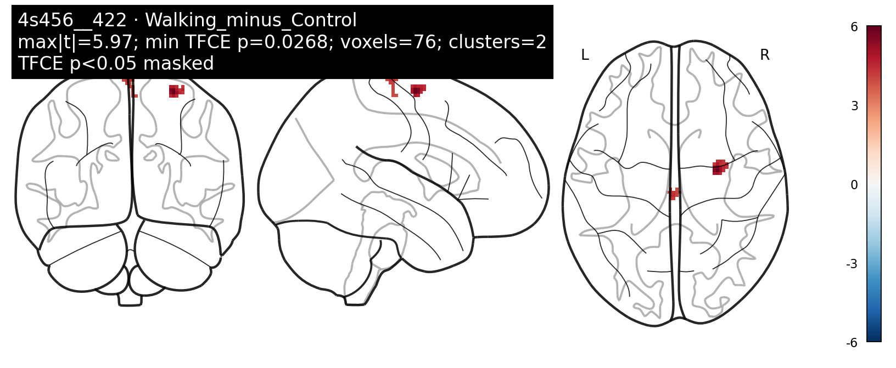
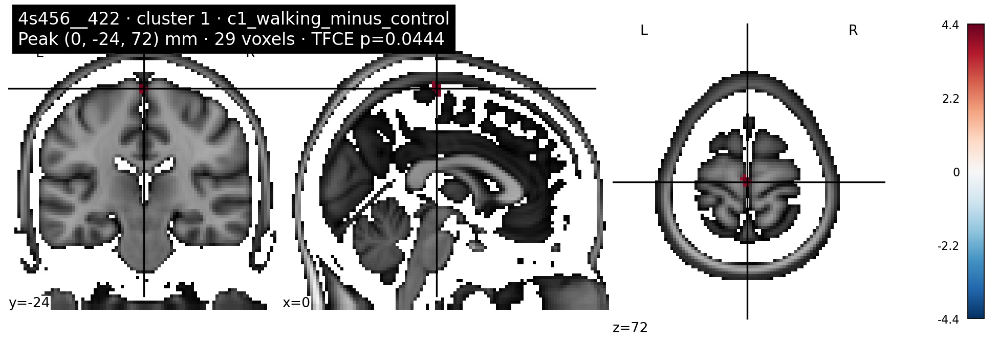
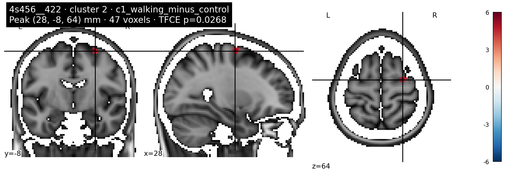
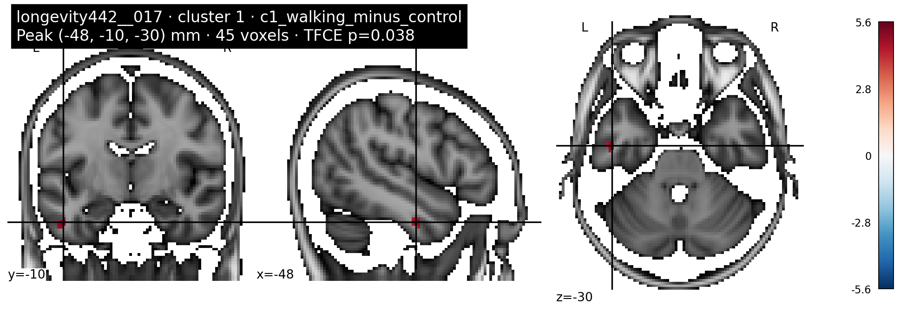

Significant results · current analysis
Current 45-subject analysis, not a previous-analysis result. Subject deltas are ses-02 − ses-01. Each map uses an independent two-sample Walking-versus-Control randomise test with both contrasts and 5,000 permutations. TFCE controls error within each seed/contrast map only, not across 612 seeds, atlases, directions or contrasts. Findings are exploratory at the full-family level.
2 significant seed maps are shown. No other completed seeds are included on this page. Control > Walking has no significant clusters.
4s456__422 · RH-RN
4s456 · label 422 · subcortex · Walking > Control
76significant voxels
2clusters
0.0268minimum TFCE p
5000permutations
Seed anatomy

Significant cluster map · Walking > Control

Peak-centred MNI overlays


Cluster table
| Cluster Index | Voxels | Peak T | Peak CorrP | p_tfce | Peak X (mm) | Peak Y (mm) | Peak Z (mm) | aal3_peak_label | aal3_composition | harvard_oxford_cortical_composition | harvard_oxford_subcortical_composition | cerebellum_composition |
|---|---|---|---|---|---|---|---|---|---|---|---|---|
| 1 | 29 | 4.4273 | 0.9556 | 0.0444 | 0 | -24 | 72 | No label | Paracentral_Lobule_L: 51.7%; Supp_Motor_Area_R: 20.7%; Paracentral_Lobule_R: 3.4% | Precentral Gyrus: 94.8% | Left Cerebral Cortex: 53.4%; Right Cerebral Cortex: 40.5% | |
| 2 | 47 | 5.971 | 0.9732 | 0.0268 | 28 | -8 | 64 | Frontal_Sup_2_R | Frontal_Sup_2_R: 100.0% | Precentral Gyrus: 67.3%; Superior Frontal Gyrus: 23.4%; Middle Frontal Gyrus: 0.8% | Right Cerebral Cortex: 100.0% |
longevity442__017 · aHIP-lh
longevity442 · label 17 · subcortex · Walking > Control
45significant voxels
1clusters
0.038minimum TFCE p
5000permutations
Seed anatomy

Significant cluster map · Walking > Control

Peak-centred MNI overlays

Cluster table
| Cluster Index | Voxels | Peak T | Peak CorrP | p_tfce | Peak X (mm) | Peak Y (mm) | Peak Z (mm) | aal3_peak_label | aal3_composition | harvard_oxford_cortical_composition | harvard_oxford_subcortical_composition | cerebellum_composition |
|---|---|---|---|---|---|---|---|---|---|---|---|---|
| 1 | 45 | 5.6211 | 0.962 | 0.038 | -48 | -10 | -30 | Temporal_Inf_L | Temporal_Inf_L: 100.0% | Inferior Temporal Gyrus, anterior division: 62.5%; Inferior Temporal Gyrus, posterior division: 18.6%; Temporal Pole: 2.2% | Left Cerebral Cortex: 82.8%; Left Cerebral White Matter: 17.2% |